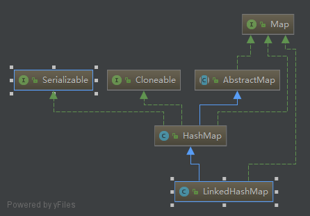

初印象：LinkedHashMap是一个有序的Map

1、注释
/**
* <p>Hash table and linked list implementation of the <tt>Map</tt> interface,
* with predictable iteration order. This implementation differs from
* <tt>HashMap</tt> in that it maintains a doubly-linked list running through
* all of its entries. This linked list defines the iteration ordering,
* which is normally the order in which keys were inserted into the map
* (<i>insertion-order</i>). Note that insertion order is not affected
* if a key is <i>re-inserted</i> into the map. (A key <tt>k</tt> is
* reinserted into a map <tt>m</tt> if <tt>m.put(k, v)</tt> is invoked when
* <tt>m.containsKey(k)</tt> would return <tt>true</tt> immediately prior to
* the invocation.)
public class LinkedHashMap<K,V>
extends HashMap<K,V>
implements Map<K,V>
{
/**
* HashMap.Node subclass for normal LinkedHashMap entries.
*/
//内部存储的是Entry结构体，其实就是加了头尾指针的加强版Node
static class Entry<K,V> extends HashMap.Node<K,V> {
Entry<K,V> before, after;
Entry(int hash, K key, V value, Node<K,V> next) {
super(hash, key, value, next);
}
}
/**
* The head (eldest) of the doubly linked list.
*/
transient LinkedHashMap.Entry<K,V> head;
/**
* The tail (youngest) of the doubly linked list.
*/
transient LinkedHashMap.Entry<K,V> tail;
LinkedHashMap是一个继承自HashMap的双端队列。它保证了插入顺序，二次插入时，以第一次插入顺序为准。
接下来我开始处于了懵逼状态，因为我看到LinkedHashMap竟然没有重写put方法，那它是怎么记录插入顺序的？
赶紧写个例子测试一下，是不是我对LinkedHashMap的认知出现了错误
public class LinkedHashMapTest {
public static void main(String[] args){
LinkedHashMap<Integer,Integer> map=new LinkedHashMap(16);
map.put(1,1);
map.put(3,3);
map.put(2,2);
map.put(3,3);
System.out.println(map.toString());
}
}
//输出
{1=1, 3=3, 2=2}
没毛病，那应该就是迭代器做了手脚？不对，前后指针必然只能在存数据时保存，如果可以在迭代器中再做手脚，那HashMap自己就可以这么干了。那先看一下迭代器吧（后记：全都看完之后，才返现这个时候应该先看put方法，先看迭代器思路有点被打乱的感觉）
public Set<Map.Entry<K,V>> entrySet() {
Set<Map.Entry<K,V>> es;
return (es = entrySet) == null ? (entrySet = new EntrySet()) : es;
}
返回的是它自己的内部类entrySet
final class EntrySet extends AbstractSet<Map.Entry<K,V>> {
public final int size() { return size; }
public final void clear() { HashMap.this.clear(); }
public final Iterator<Map.Entry<K,V>> iterator() {
return new EntryIterator();
}
只贴了一部分
HashMapde的entrySet的迭代器是EntryIterator,LinkedHashMap的entrySet也是EntryIterator,只不过此EntryIterator非彼EntryIterator,HashMap的EntryIterator是有final修饰的，是不可被继承的，不能被继承？那就自己实现一个好了
final class LinkedEntryIterator extends LinkedHashIterator
implements Iterator<Map.Entry<K,V>> {
public final Map.Entry<K,V> next() { return nextNode(); }
}
它继承了LinkedHashIterator，按一般来说，LinkedHashIterator会继承HashIterator（abstract修饰，没有final修饰），但是并没有
abstract class LinkedHashIterator {
LinkedHashMap.Entry<K,V> next;
LinkedHashMap.Entry<K,V> current;
int expectedModCount;
LinkedHashIterator() {
next = head;
expectedModCount = modCount;
current = null;
}
public final boolean hasNext() {
return next != null;
}
final LinkedHashMap.Entry<K,V> nextNode() {
LinkedHashMap.Entry<K,V> e = next;
if (modCount != expectedModCount)
throw new ConcurrentModificationException();
if (e == null)
throw new NoSuchElementException();
current = e;
next = e.after;
return e;
}
public final void remove() {
Node<K,V> p = current;
if (p == null)
throw new IllegalStateException();
if (modCount != expectedModCount)
throw new ConcurrentModificationException();
current = null;
K key = p.key;
removeNode(hash(key), key, null, false, false);
expectedModCount = modCount;
}
}
nextNode()方法中直接使用后继指针了。并无任何特殊。
那应该就是HashMap的put方法中调用了多态方法，检查，最大的多态机会是putVal方法，然而putVal没有重写，仔细查找，最终是newNode方法进行了多态调用
Node<K,V> newNode(int hash, K key, V value, Node<K,V> e) {
LinkedHashMap.Entry<K,V> p =
new LinkedHashMap.Entry<K,V>(hash, key, value, e);
linkNodeLast(p);
return p;
}
//前后指针的挂在逻辑非常简单，当前节点的前驱节点指向原来的尾部节点，原尾结点的后继指针指向新增结点
private void linkNodeLast(LinkedHashMap.Entry<K,V> p) {
LinkedHashMap.Entry<K,V> last = tail;
tail = p;
if (last == null)
head = p;
else {
p.before = last;
last.after = p;
}
}